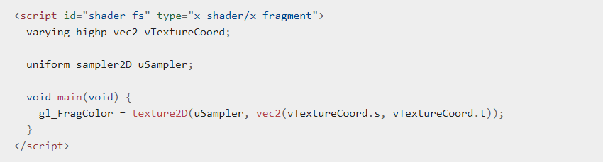

프로젝트를 시작하기 전
준비물 : Web Server for Chrome

이미지 파일을 Local 에서 보안상의 이유로 사용하지 못하도록 막아놓았기 때문에,
Chrome Web Server를 Chrome Web Store에서 검색 후 실행시켜서 실행하고자 하는 폴더를 launch합니다.

그 후에 화면에 나와있는 로컬 주소를 클릭하여 실행 시킵니다.
프로젝트를 시작하기 전
준비물 : Web Server for Chrome
이미지 파일을 Local 에서 보안상의 이유로 사용하지 못하도록 막아놓았기 때문에,
Chrome Web Server를 Chrome Web Store에서 검색 후 실행시켜서 실행하고자 하는 폴더를 launch합니다.
그 후에 화면에 나와있는 로컬 주소를 클릭하여 실행 시킵니다.
큐브의 각 면에 사진 텍스쳐를 입혀 보겠습니다.
텍스쳐 로딩가장 먼저 해야할 일은 텍스쳐를 읽어오는 것입니다.
이번 예제에서는 동일한 하나의 텍스쳐를 회전하는 정육면체의 6개의 면에 입혀볼 것입니다.
여러개의 텍스쳐를 각 면에 입힌다고 해도 하나를 입히는 것과 동일한 방법을 적용하면 됩니다.
텍스쳐를 읽어오는 코드는 다음과 같습니다:

initTextures() 루틴은 GL의 createTexture() 함수를 호출해서 GL의 텍스쳐 객체인 cubeTexture를 생성하는 걸로 시작됩니다.
그리고 Image 객체를 생성해서 텍스쳐로 사용하기 위해 로딩한 이미지 파일을 Image 객체에 저장합니다.
handleTextureLoaded() 콜백 루틴은 이미지 로딩이 완료되면 실행됩니다.
텍스쳐를 실질적으로 생성하려면, 앞에서 새로 생성한 텍스쳐 객체를 gl.TEXTURE_2D에 바인딩해야 합니다.
그리고 나서 이미지 데이터가 로딩된 이미지 객체를 texImage2D()에 전달하여 호출하면, 이미지 데이터가 텍스쳐에 쓰여(write) 집니다.
그 다음 두 라인은 텍스쳐를 위한 필터링을 준비합니다.
이 필터링은 이미지 크기가 변경될 때 이미지가 필터되는 방식을 제어합니다.
여기에서는 이미지를 확대할 때 선형 필터링을 사용하고, 이미지를 축소할 때 mipmap을 사용합니다.
generateMipMap()을 호출해서 mipmap이 만들어지면 gl.TEXTURE_2D에 null을 바인딩시켜서, 텍스쳐를 다룰 준비가 끝났다는 것을 WebGL에게 알려줍니다.
면에 텍스쳐 입히기이제 텍스쳐 읽어오기는 완료되었고, 텍스쳐도 사용할 준비가 되어 있습니다.
하지만 텍스쳐를 사용하기 전에 텍스쳐의 좌표와 정육면체의 면의 정점을 매핑 시켜줘야 합니다.
이를 위해 initBuffers() 함수 안에 있던 정육면체 각 면의 색상을 설정하는 내용을 모두 아래와 같은 코드로 대체합니다.

셰이더 프로그램과 셰이더를 초기화하는 코드들도 단색 색상 대신 텍스쳐를 사용할 수 있도록 수정해야 합니다.먼저 initShaders() 안에 있는 아주 단순한 변경 사항을 알아 봅시다:

다음으로 색상 데이터를 읽어오던 정점 셰이더를 텍스쳐 좌표를 읽어오도록 수정해야 합니다.

마찬가지로 프래그먼트 셰이더도 수정해야 합니다:

큐브를 마우스로 컨트롤 하는 기능을 추가해 보겠습니다.

아래의 예시는 onmousemove 캔버스 요소 내부의 이벤트에 대한 예제 핸들러입니다.
마우스 이전 위치에서 오프셋을 계산하고 해당 오프셋을 사용하여 장면의 회전 각도를 수정합니다.

마우스 wheel로 zoom을 당겼다가 풀었다가 하는 방법입니다.

앞서 다뤘던 내용들을 적용해보겠습니다.
우선 이미지를 선택해서 Texture Mapping 해봅시다.
*주의* 반드시 data 폴더 안에 사진을 넣고 그 사진 중에서 골라야 합니다. 사진 크기는 128x128 픽셀입니다.
원하는 사진을 폴더 내에서 선택하여 주십시오.